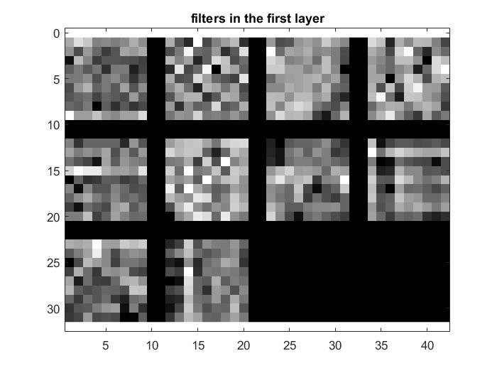
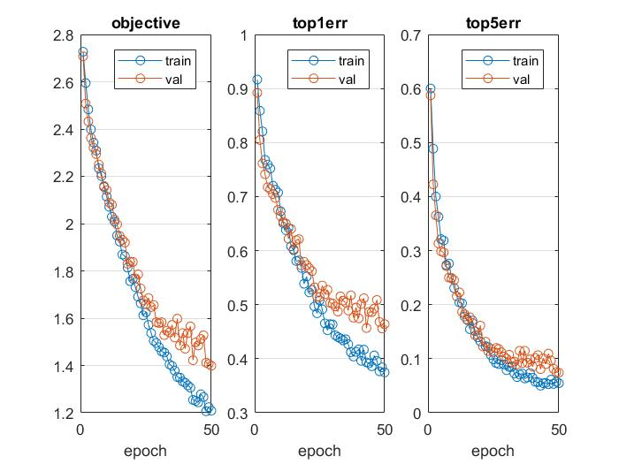
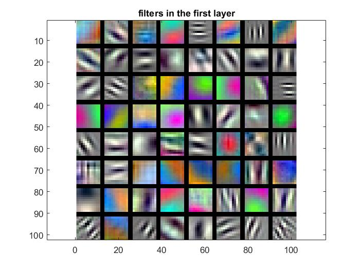
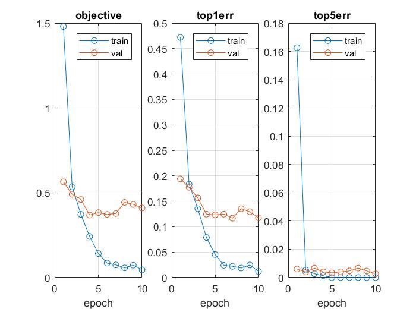
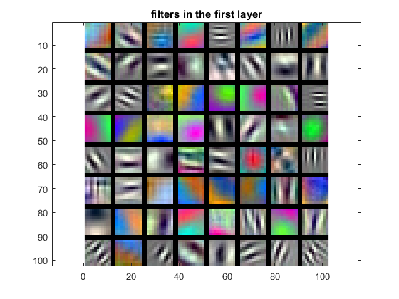

Project 6 / Deep Learning

Example of a right floating element.
In recent years, deep learning has replaced older methods of scene recognition like bag of features or spatial pyramid. This project in particular performs scene recognition through deep convolutional networks using the MatConvNet tollbox. Specifically, two approaches are used: first, training a deep convolutional network from scratch on a small set of training images, and second, fine-tuning a pre-trained deep convolutional network so as to use it on our own image set.
- Train from scratch
- Fine-tune existing
Phase I
A deep convolutional network is composed of several layers, with the baseline (provided) network having four–convolutional, max pool, relu, and fully convolutional. For training purposes, a softmax loss layer is added on top on the other four. When run for 30 training epochs, this baseline network yields an accuracy of ~25%. To improve this several changes were made to the baseline network:
- Jitter input data
- Zero-center images
- Regularize the network
- Deepen the network
- Normalize batches
The first stage, jittering input data, was implemented by generating a random series of integers between 1 and half the batch size and using these numbers as indices in the image array to left-right flip the images at those indices. Half of the time the random series was generated, the entire batch's images would be flipped left-right. The implementation is shown below:
im = imdb.images.data(:,:,:,batch);
labels = imdb.images.labels(1,batch);
r = randi([1 50],1,25);
if (r(1) > 25)
r = 1:50;
end
for i=1:size(r)
im(:,:,1,r(i)) = fliplr(im(:,:,1,r(i))); %how to properly index to rth image?
end
The second stage, zero-centering images, was a simple procuess of computing the mean image from the list of all images, then subtracting said mean from all the images. The implementation is shown below:
mean_image = mean(imdb.images.data,4);
imdb.images.data = imdb.images.data - mean_image;
The third stage, regularizing the network, was implemented by inserting a new layer into the deep convolutional network. Specifically, a dropout layer with a dropout rate of 0.5, inserted just before the fully convolutional layer. The implementation is shown below:
net.layers{end+1} = struct('type', 'dropout', 'rate', 0.5);
The fourth stage, deepening the network, was implemented by inserting three new layers into the deep convolutional network. Inserted after the existing relu layer was a new convolutional layer with a 5x5 spatial resolution, followed by a new max pool layer with a 3x3 sliding window and stride of 2, followed by a new relu layer. The spatial resolution of the preexisting convolutional layers were adjusted accordingly to match the additions. The implementation is shown below:
net.layers{end+1} = struct('type', 'conv', ...
'weights', {{f*randn(5,5,10,12, 'single'), zeros(1, 12, 'single')}}, ...
'stride', 1, ...
'pad', 0, ...
'name', 'conv2') ;
net.layers{end+1} = struct('type', 'pool', ...
'method', 'max', ...
'pool', [3 3], ...
'stride', 2, ...
'pad', 0) ;
net.layers{end+1} = struct('type', 'relu') ;
The fifth and final stage, normalizing batches, was implemented by inserting batch normalization layers into the network, each immediately after a convolutional layer. This was done by adding a layer_index counter which kept track of the layers' position, and then making a call to the provided insertBnorm(net, layer_index) function. After this stage, the network produced a Lowest validation erorr is 0.456000. The finalized implementation of the network is shown below:
net.layers = {} ;
layer_index = 0;
net.layers{end+1} = struct('type', 'conv', ...
'weights', {{f*randn(9,9,1,10, 'single'), zeros(1, 10, 'single')}}, ...
'stride', 1, ...
'pad', 0, ...
'name', 'conv1') ;
layer_index = layer_index + 1;
net = insertBnorm(net, layer_index);
layer_index = layer_index + 1;
net.layers{end+1} = struct('type', 'pool', ...
'method', 'max', ...
'pool', [7 7], ...
'stride', 2, ...
'pad', 0) ;
layer_index = layer_index + 1;
net.layers{end+1} = struct('type', 'relu') ;
layer_index = layer_index + 1;
net.layers{end+1} = struct('type', 'conv', ...
'weights', {{f*randn(5,5,10,12, 'single'), zeros(1, 12, 'single')}}, ...
'stride', 1, ...
'pad', 0, ...
'name', 'conv2') ;
layer_index = layer_index + 1;
net = insertBnorm(net, layer_index);
layer_index = layer_index + 1;
net.layers{end+1} = struct('type', 'pool', ...
'method', 'max', ...
'pool', [3 3], ...
'stride', 2, ...
'pad', 0) ;
layer_index = layer_index + 1;
net.layers{end+1} = struct('type', 'relu') ;
layer_index = layer_index + 1;
net.layers{end+1} = struct('type', 'dropout', 'rate', 0.5);
layer_index = layer_index + 1;
net.layers{end+1} = struct('type', 'conv', ...
'weights', {{f*randn(10,10,12,15, 'single'), zeros(1, 15, 'single')}}, ...
'stride', 1, ...
'pad', 0, ...
'name', 'fc1') ;
layer_index = layer_index + 1;
% Loss layer
net.layers{end+1} = struct('type', 'softmaxloss') ;
net = vl_simplenn_tidy(net);
Phase II
The second approach involved fine-tuning the provided VGG network. This process was divided into two steps: top1err: 0.117 top5err: 0.003
- Altering network layers
- Altering input processing
The first step, altering the network layers, consisted of removing the existing fully convolutional eighth layer as well as the softmax layer, and then redefining them to output a filter depth of 15. Furthermore, two dropout layers were inserted, one between the sixth and seventh fully convolutional layers, and another between the seventh and eighth. The implementation is shown below:
net = load('../matconvnet-1.0-beta25/imagenet-vgg-f.mat') ;
temp0 = net.layers{size(net.layers, 2) - 3};
net.layers{size(net.layers, 2) - 3} = struct('type', 'dropout', 'rate', 0.5);
temp1 = net.layers{size(net.layers, 2) - 2};
net.layers{size(net.layers, 2) - 2} = temp0;
temp0 = net.layers{size(net.layers, 2) - 1};
net.layers{size(net.layers, 2) - 1} = temp1;
temp1 = net.layers{size(net.layers, 2)};
net.layers{size(net.layers, 2)} = struct('type', 'dropout', 'rate', 0.5);
net.layers{size(net.layers, 2) + 1} = temp0;
net.layers{size(net.layers, 2) + 1} = temp1;
net.layers{size(net.layers, 2) - 1} = struct('type', 'conv', ...
'weights', {{f*randn(1,1,4096,15, 'single'), zeros(1, 15, 'single')}}, ...
'stride', 1, ...
'pad', 0, ...
'name', 'fc8') ;
net.layers{size(net.layers, 2)} = struct('type', 'softmaxloss') ;
The second step, altering the input processing, consisted of resizing all input images to 224x224, then converting all of them to RGB instead of greyscale, then subtracting the mean image from all input images. The implementation is shown below:
for set = 1:length(sets)
for category = 1:length(categories)
cur_path = fullfile( SceneJPGsPath, sets{set}, categories{category});
cur_images = dir( fullfile( cur_path, '*.jpg') );
if(set == 1)
fprintf('Taking %d out of %d images in %s\n', num_train_per_category, length(cur_images), cur_path);
cur_images = cur_images(1:num_train_per_category);
elseif(set == 2)
fprintf('Taking %d out of %d images in %s\n', num_test_per_category, length(cur_images), cur_path);
cur_images = cur_images(1:num_test_per_category);
end
for i = 1:length(cur_images)
cur_image = imread(fullfile(cur_path, cur_images(i).name));
cur_image = single(cur_image);
if(size(cur_image,3) == 1)
fprintf('color image found %s\n', fullfile(cur_path, cur_images(i).name));
cur_image = cat(3, cur_image, cur_image, cur_image);
end
cur_image = imresize(cur_image, image_size);
% Stack images into a large image_size x 1 x total_images matrix
% images.data
imdb.images.data(:,:,:,1,image_counter) = cur_image;
imdb.images.labels( 1,image_counter) = category;
imdb.images.set( 1,image_counter) = set; %1 for train, 2 for test (val)
image_counter = image_counter + 1;
end
end
end
mean_image = mean(imdb.images.data,5);
imdb.images.data = imdb.images.data - mean_image;
Results in a table
|     |
